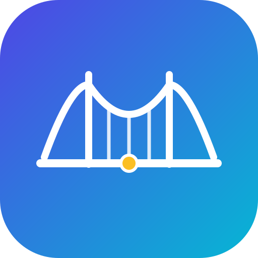
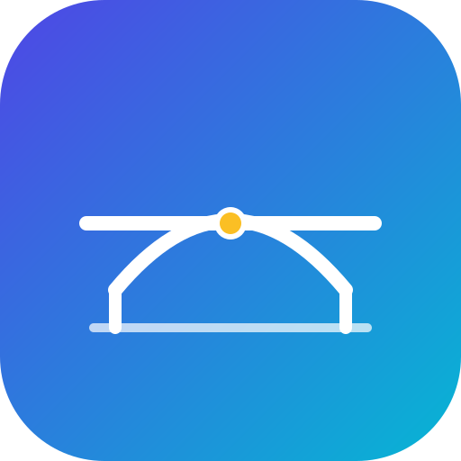

유학생 비자·체류 AI 도우미 — 로고 미리보기


· 의미: 다리(bridge) = 유학생과 한국 행정을 잇는 다리. 가운데 노란 점은 다리를 건너는 학생.
· 폰트: 한글 Pretendard / Noto Sans KR, 영문 Poppins (시스템에 없으면 기본 산세리프로 대체)
· 파일: logo-icon.svg (메인) · logo-icon-arch.svg (대안) · logo-horizontal.svg (가로형)
· SVG라 색·크기 자유 수정 가능. 앱/슬라이드/파비콘 어디든 사용.